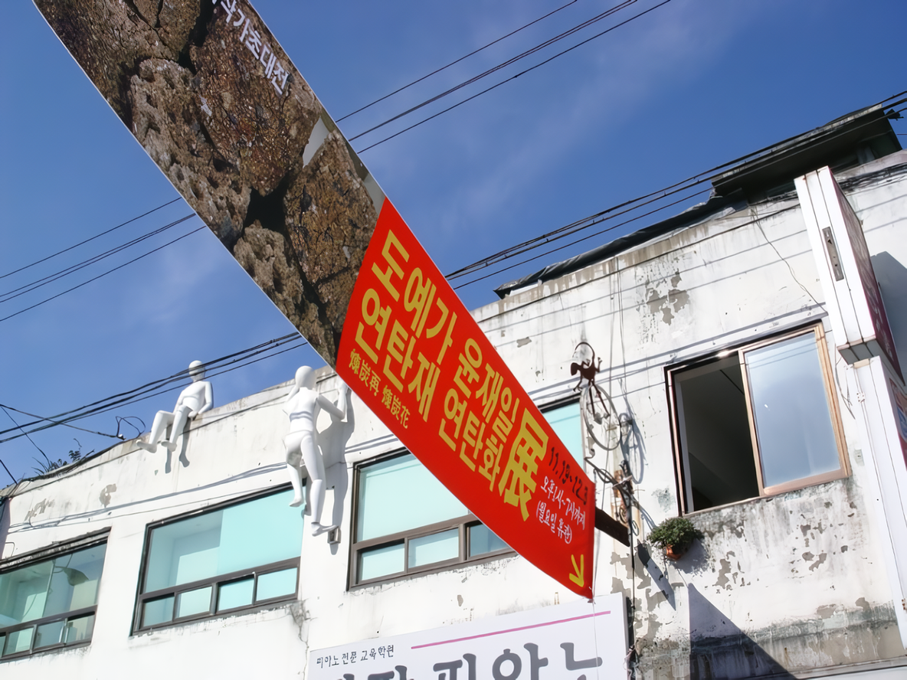
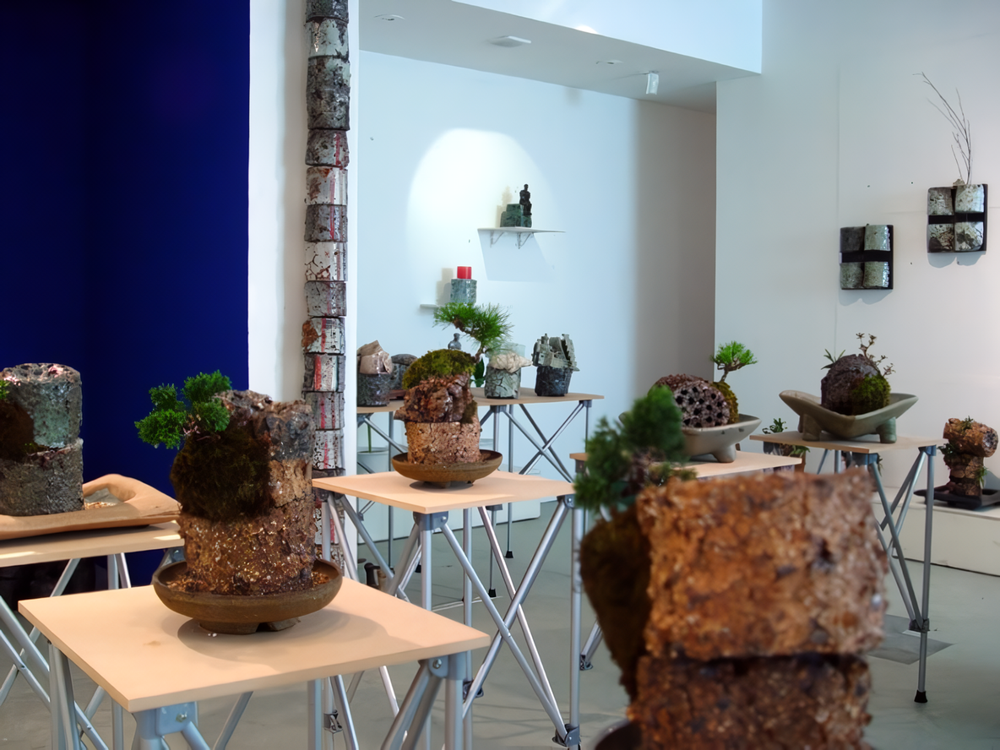
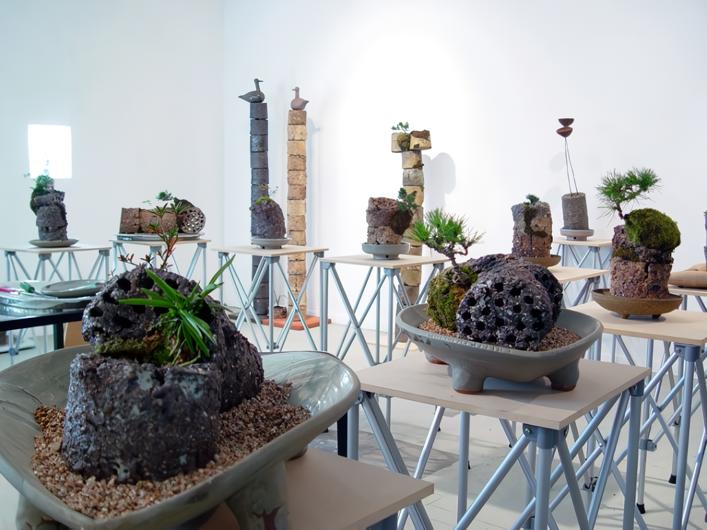
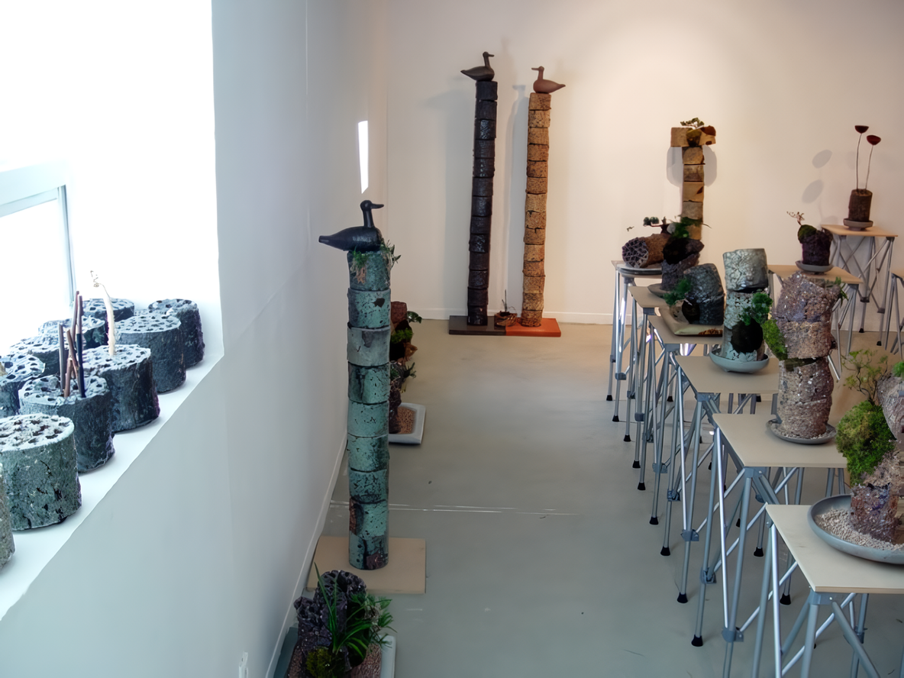
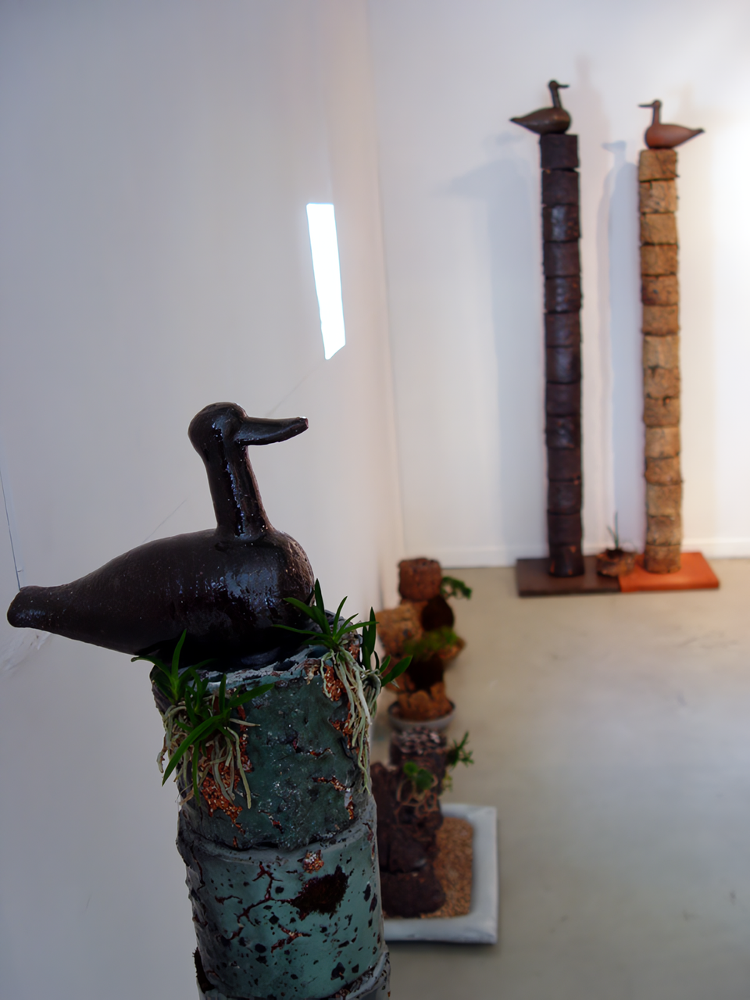
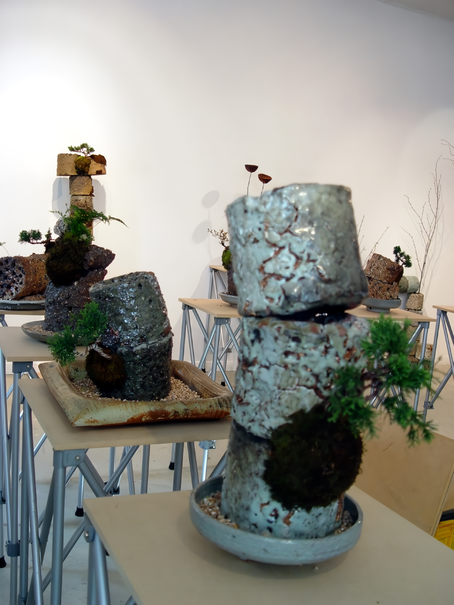
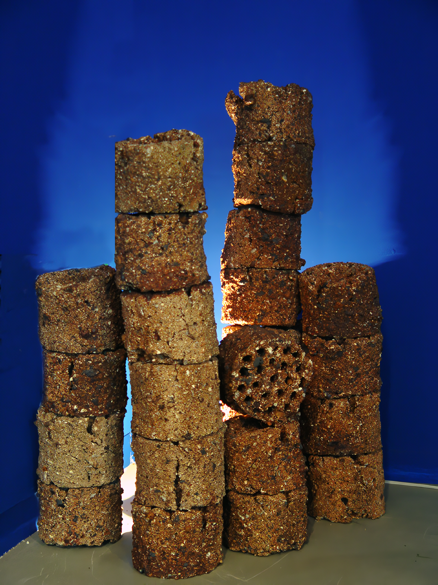
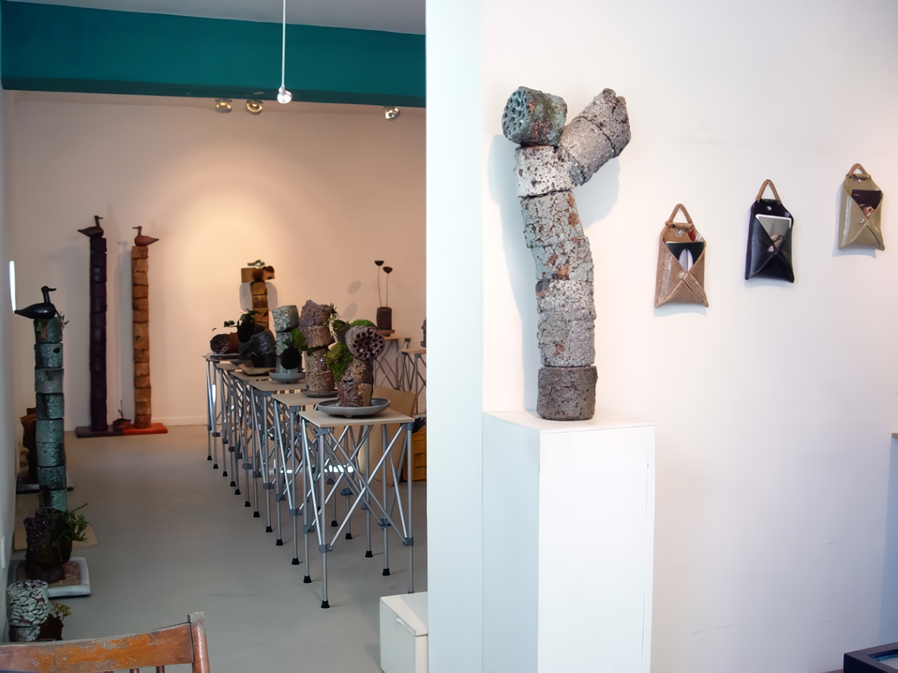
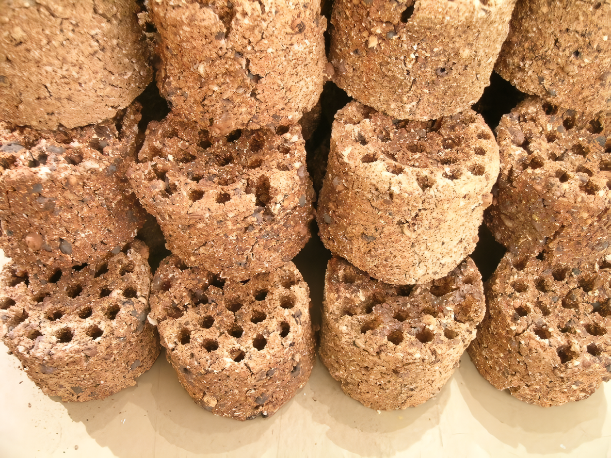

연탄재 연탄화(煉炭再 煉炭花)
2005 스톤앤워터 지역작가 초대전 도예가 윤재일
2005_1119 ▶ 2005_1203

관람시간 / 13:00 ~ 19:00 / 월요일 휴관
보충대리공간 스톤앤워터
경기도 안양시 만안구 석수2동 286-15번지 2층
Tel. 031_472_2886
석탄백탄 타는데 연기가 펄썩 나구요.
이내 가슴 타는데 연기도 김도 안나네.
(경기민요 ‘사발가’ 중에서)
연탄이 생활의 필수품이었던 시절이 있었습니다.
활활 타서 버려지는 연탄재를 수거하여 다시 새로운 생명을 부여하는
도예가 윤재일의 煉炭再 煉炭花展에 여러분을 초대합니다.
오셔서 연탄재에 묻어나는 따뜻한 사연들을 나누어 주시기 바랍니다.
- 초대의 글 -
도예가 윤재일은 1991년 안양시 인덕원에 있는 작업실에 정착했다. 휘황찬란(輝煌燦爛)한 인덕원사거리 인근 골목길로 조금만 접어들면 어느 동네나 있을법한 놀이터 옆 철물점 지하 20여 평의 작업실 입구에는 흙으로 만든 '다다도예연구소' 간판을 달고 있다.
  
연탄(煉炭)을 한자어로 해석한다면 '쇠를 불리어 정련하는 석탄'이라고 해석할 수 있다. 주로 석탄을 진흙과 일정비율로 섞어 성형되어 우리 내 생활 속에서 반 백 년동안 쓰여 왔던 연탄은 지난 시절 골목어귀에서 곳곳에서 흔하게 볼 수 있던 추억 속의 산물이다.
 
십여년 전만 해도 골목골목 쌓여있던 수많은 연탄재는 다 어디로 갔을까? 구공탄이라고 불렀던 연탄은 32공탄부터 16공탄까지 있는데 각 가정에서 오랫동안 썼던 연탄은 외곽 14개, 중간 7개, 중앙에 1개로 발열량을 높이기 위해 보편화된 22공탄이 대부분이었다.
   복사본-0.jpg)
아침마다 온 가족이 연탄가스에 중독되어 박카스나 동치미국물을 약물삼아 죽음과의 싸움을 견뎌냈던 시절, 아궁이의 바람구멍을 틀어막고 자다 꺼져버린 연탄불을 갈기 위해 밤잠 안 설쳐본 사람은 모른다. 덜 꺼진 연탄재에 오줌뿌리기, 연탄재 집어 들고 격파하기, 이소룡 흉내내며 걷어차기, 연탄불 빌리기, 새끼줄에 엮인 연탄사기, 연탄재 섞어서 눈싸움하기, 미끄러운 골목길에 연탄재 뿌리기, 수많은 보편적인 사연들이 중첩되거나 파노라마되어 펼쳐진다. 개막 당일 요즈음 도시 속에서 보기 힘든 연탄불을 피워놓고 오뎅국물 데펴 놓겠다. 떡도 구워먹고 구경도 하면서 이야기꽃을 피우는 시간을 갖는다.
■ 박찬응